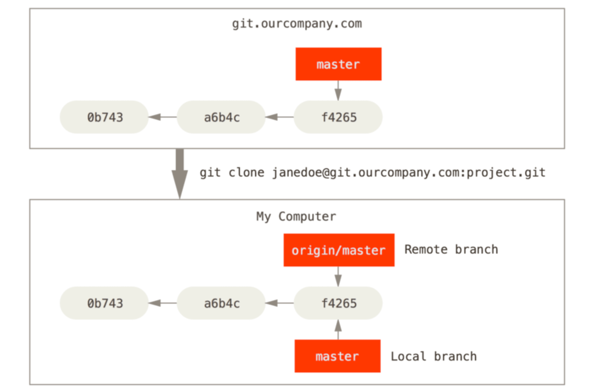
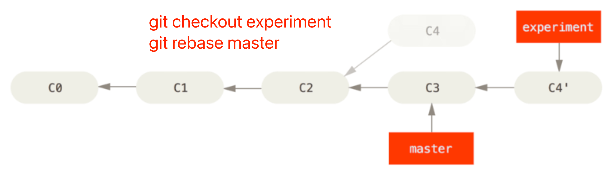

《Pro Git - 2nd Edition》读书笔记（第 1-6 章）
旧书清理系列。这本书自 2017 年看了一半后一直没有后续，作为一个强迫症，对于这种事情是无法接受的。
一、起步
- Page 7早期版本控制系统 RCS（Revision Control System）的工作原理是在硬盘上保存补丁集（即文件修订前后的变化）。通过应用所有补丁，可以重新计算出各个版本的文件内容。本地版本控制系统、集中化版本控制系统（CVS、Subversion、Perforce）以及分布式版本控制系统（Git、Mercurial）。前者使用单一集中管理的服务器保存所有文件的修订版本，容易发生“单点丢失”，而后者则在远程和本地均保存有代码库和版本数据库的完整备份。
- Page 11Git 的诞生源于 2005 年 Linux 内核社区在结束与 BitKeeper 的合作关系后，对维护内核补丁提交与归档等繁琐事务的急切需求。而 Linus Torvalds 则担起了这个重任，新版本系统的目标：
- 速度；
- 简单的设计；
- 对非线性开发模式的强力支持（允许成千上万个并行开发的分支）；
- 完全分布式；
- 有能力高效管理类似 Linux 内核一样的超大规模项目（速度和数据量）。
- Page 12传统版本控制系统保存的是基本文件和每个文件随时间逐步积累的差异。而 Git 则在每次存在更新时，对当时的全部文件制作一个快照，并保存该快照的索引。
Conceptually, Git stores a series of complete snapshots (git commits, recognized by hash ids). Practically, it does indeed use diffs, but the user doesn’t really know about it in order to effectively use Git.
- Page 13Git 使用 SHA-1 来进行快照的完整性校验。
- Page 14Git 的三种状态：已修改（modified）、已暂存（staged）、已提交（commited）。
- Page 17Git 的配置信息存在于三个地方，每个级别覆盖上一级别：
- /etc/gitconfig：所有用户的全局设置（–system）；
- ~/.gitconfig 和 ~/.config/git/config：当前登录用户的设置（–global）；
- .git/config：当前仓库的设置。
- Page 18初次使用 Git 需要通过
git config来设置用户名与邮件地址等，这些信息会被写入到每一次提交中，不可更改：
# 配置基础信息；
git config --global user.name "hangyu"
git config --global user.emial hangyu@paypal.com
# 配置默认文本编辑器；
git config --global core.editor vim
# 查看配置（如有重复，则会使用最后一个出现的配置）；
git config --list
# 检查某项配置的值；
git config user.name
二、Git 基础
- Page 20初始化新仓库：
git init # 创建一个 .git 子目录，包含仓库相关文件；
git remote add origin <upstream>
- Page 21使用 Git 时文件的生命周期：
- Untracked：未纳入版本控制的文件；
- Unmodified：已纳入版本控制但本次并未被修改的文件；
- Modified：已纳入版本控制且被修改的文件；
- Staged：准备作为下一次提交的所有改动（新文件 + 旧文件改动）。
- Page 23
git add更适合被理解为“添加内容到下一次提交中”（添加新文件、变更，将有冲突的文件标记为已解决等）。 - Page 25状态简览：
git status -s。
- ??：新添加的未跟踪文件；
- A：新添加到暂存区的文件；
- 右 M：被修改但未被暂存；
- 左 M：修改且已被暂存；
- MM：被修改且已被部分暂存。
- Page 25.gitignore 中的文件名支持 glob 模式匹配（Shell 使用的简化正则）。
# No .a files.
*.a
# But do track lib.a, even though you're ignoring .a files above.
!lib.a
# Only ignore the TODO file in the current directory, not "subdir/TODO".
/TODO
# Ignore all files in the "build/" directory.
build/
# Ignore "doc/notes.txt", but not "doc/server/arch.txt".
doc/*.txt
# Ignore all .pdf files in the "doc/" directory.
doc/**/*.pdf
- Page 27查看已暂存的，将要添加到下次提交的内容。默认情况下
git diff仅查看还未被暂存的改动差异：
git diff --staged
- Page 31跳过使用暂存区直接提交，仅对非新增文件的改动生效（不建议使用）：
git commit -a -m <message>
- Page 31移除文件（默认情况下
git rm不允许直接删除含有已暂存改动（新文件或新改动）的文件）：
# 仅删除文件；
rm <file>
# 删除文件并放到暂存区；
git rm <file>
# 删除文件并放到暂存区（同上）；
git rm -f <file>
# 从 Git 仓库中删除文件，但保留其在工作目录中（先添加 .gitignore）；
git rm --cache <file>
- Page 33移动文件（包括重命名）：
# 简化方式；
git mv <from> <to>
# 等价的方式；
mv <from> <to>
git rm <from>
git add <to>
- Page 34查看日志：
git log -p # 显示提交差异；
git log --pretty=<oneline|short|full|fuller>
git log --oneline --graph # 显示分支合并历史；
- Page 37格式化日志输出（主要用于自动化的日志提取）：
git log --pretty=format:"%h - %an, %ar : %s"
- Page 39格式化日志记录查找：
git log --grep <keyword> --since <date> --all-match # 查看同时满足所有条件的提交；
git log -p -S <keyword> -- <path> # 查看添加或移除了某个关键字的提交详情；
- Page 40修改提交内容及提交信息（会将暂存区的内容合并到上一次提交中，并同时可以修改提交信息）：
git commit --amend
- Page 42回退暂存区与工作区的改动：
# 回退暂存区改动；
git reset HEAD <file>
git restore --staged <file> # Git 2.23.0 引入；
# 回退工作区改动；
git checkout -- <file>
git restore <file>
- Page 43管理远程仓库：
git remote -v # 查看本地仓库配置的远程仓库信息；
git remote add <name> <url> # 添加远程仓库；
git remote show <name> # 查看某个远程仓库的更多信息；
git remote rm <name> # 移除本地远程仓库；
git remote rename <old> <new> # 更名本地远程仓库；
- Page 44拉取/推送远程仓库信息：
git fetch <remote> <branch> # 不会自动合并到本地分支；
git pull <remote> <branch> # 会自动合并到本地的“跟踪分支”（一般即默认分支）；
git push <remote> <branch>
- Page 47操作标签：
- “轻量标签” VS “附注标签”：“附注标签（Annotate）”是 Git 数据库中的一个完整对象，它可以被校验。其中包含打标签者的名字、电子邮件地址、日期试驾，以及一个标签信息，可以通过 GPG（GNU Privacy Guard）进行签名和校验。而“轻量标签（Lightweight）”仅是一个特定提交的引用，本质上是将提交校验和存储到一个文件中，没有保存任何其他信息。
git tag # 列出所有标签；
git tag <name> [<commit-id>] # 创建“轻量标签”；
git tag -a <name> -m <msg> [<commit-id>] # 创建“附注标签”；
git show <name> # 查看某个标签的信息；
git push origin --tags # 推送所有标签；
git push origin <name>
git checkout -b <branch> <name> # 在特定标签上创建一个新分支；
- Page 52Git 设置命令别名：
git config --global alias.unstage 'reset HEAD --'
git config --global alias.last 'log -1 HEAD'
git config --global alias.visual '!gitk' # 引用外部命令；
三、Git 分支
- Page 53暂存操作会使用 SHA-1 算法来计算每一个暂存文件的校验和，然后将当前版本的文件快照保存到 Git 仓库中（使用 blob 对象），最终将校验和加入到暂存区等待提交。当使用
git commit提交操作时，Git 会首先计算每一个子目录的校验和，然后将这些校验和保存为树对象（每个目录对应一个），记录目录结构与 blob 索引。随后，Git 会创建一个提交对象，除了包含上述信息外，还包括指向这个树对象的指针（由 Commit ID 唯一表示）。
- Page 54每一个提交记录都包含有指向上一次提交对象（父对象）的指针。
- Page 55基于当前提交对象创建一个分支（在当前提交对象上创建一个指针）：
git branch <branch-name>
- Page 56HEAD 指向了当前所在的本地分支，会随着
git checkout/git switch切换分支而发生改变。 - Page 59Git 的分支实质上仅是包含所指对象校验和的文件（40 字节的 SHA-1 字符串 + 1 字节的换行符）。
- Page 63
git merge时的 “Fast-Forward” 模式：当试图合并两个分支时，如果顺着一个分支走下去能够到达另一个分支，那么 Git 在合并两者时，只会简单地将指针向前推进（快进）。而在所合并到分支不是合并分支的直接祖先时，Git 会选择两个分支的末端所指的快照（下图 C4、C5），以及这两个分支的公共祖先（下图 C2），进行简单的三方合并（Three-way Merge）。需要注意：如果在 C4 和 C3、C5 中出现了对同一个文件的同一个区域的修改，则在合并时会产生冲突。
- Page 69常用分支命令：
git branch -v # 查看每一个分支的最后一次提交；
git branch --merged # 查看列表中已合并到当前分支的分支；
git branch --no-merged # 查看列表中未合并到当前分支的分支；
git branch -d <branch-name> # 对于尚未合并到当前分支的分支会失效（需要使用 -D 选项）；
- Page 73远程跟踪分支：远程分支状态的引用，以 “remote/branch” 的形式命名。

git fetch可以更新跟踪分支的状态，但不会与本地分支自动合并。该指令执行后会修改本地跟踪分支的指向。
- Page 79推送分支：
git push <upstream> <local-branch>:<remote-branch> # 推送本地分支到远程的某个分支；
git push <upstream> <branch> # 推送本地分支到远程的同名分支；
- Page 79从远程跟踪分支创建自己的本地跟踪分支：
git checkout -b <local-branch> <upstream>/<remote-branch> # 创建自定义名称分支并设置其跟踪分支；
git checkout --track <upstream>/<remote-branch> # 创建同名分支并设置其跟踪分支；
git checkout <remote-branch> # 简写版，会自动创建本地跟踪分支；
- Page 80本地跟踪分支：即在使用
git pull时 Git 能够自动识别去哪个服务器上抓取、合并到哪个分支。可以使用git remote show <upstream>来查看本地关于 “<upstream>” 已有的跟踪分支。
git checkout <local-branch>
git branch -u <upstream>/<remote-branch> # 为当前已有本地分支设置上游跟踪分支；
git merge @{u} # 合并远程跟踪分支到本地跟踪分支，常用于 “git fetch” 之后；
git branch -vv # 查看设置的所有跟踪分支；
- Page 81
git pull与git fetch的区别：前者会自动合并远程分支的改动到本地的远程跟踪分支；后者则仅仅更新本地缓存的远程跟踪分支，需要自行进行合并（git merge @{u}）到本地跟踪分支。
# 分开步骤；
git checkout <branch>
git fetch <upstream> <branch> # 更新本地远程跟踪分支；
git merge @{u} # 合并跟踪分支到当前本地分支；
# 一次性完成；
git pull <upstream> <branch>
# 一次性抓取，不将 URL 存为远程引用；
git pull <repo-url>
- Page 81删除远程分支（Git 服务器不会立即删除数据，而是会保留数据直到垃圾回收的进行）：
git push <upstream> --delete <branch-name>
git push <upstream> :<branch-name>
- Page 82变基：将一系列提交按照原有次序依次应用到另一个分支上。原理是首先找到两个分支（比如当前分支 experiment、变基操作的目标基底分支 master）的最近共同祖先 C2，然后对比当前分支相对于该祖先的历次提交，提取相应的修改并存为临时文件，然后将当前分支指向目标基底 C，最后以此将之前另存为临时文件的修改依序应用。
git rebase <branch> # 将当前分支的改动（相对于公共祖先）重新应用到 <branch> 分支对应的修改记录上（改动的仍是当前分支）；

git pull --rebase <upstream> <branch> # 将远程跟踪分支的改动变基到本地跟踪分支；
git rebase <base-branch> <topic-branch> # 将特性分支（topic）变基到目标分支（base）上；
- 将 “client” 分支变基到主分支：取出 “client” 分支，找出处于 “client” 分支与 “server” 分支的共同祖先之后的修改，然后把它们在 “master” 分支上重放一遍：
git rebase --onto master server client
- “变基”的重要原则：不要对在你的仓库外有副本的分支执行变基。若遭遇该处境，你首先需要检查自己做了哪些修改，以及他们覆盖了哪些修改。Git 同时也会为每一次的修改计算 SHA-1 校验和，并在变基时自动整理没有应用的修改。因此可以为强制变基后的结果再次执行变基来尝试解决类似的问题：
# 在拉取代码时使用变基代替合并，或者先 “fetch” 再自行 “rebase”；
git pull --rebase # 将本地分支 rebase 到远程跟踪分支；
四、服务器上的 Git
（略）
五、分布式 Git
- Page 111集成管理者工作流程：每个开发者拥有自己仓库的写权限和其他所有人仓库的读权限。这种情形下通常会有个代表“官方”项目的权威的仓库。要为这个项目做贡献，你需要从该项目克隆出一个自己的公开仓库，然后将自己的修改推送上去。接着你可以请求官方仓库的维护者拉取更新合并到主项目。维护者可以将你的仓库作为远程仓库添加进来，在本地测试你的变更，将其合并入他们的分支并推送回官方仓库。
- 项目维护者推送到主仓库；
- 贡献者克隆此仓库，并做出修改；
- 贡献者将数据推送到自己的公开仓库；
- 贡献者给维护者发送邮件，请求拉取自己的更新；
- 维护者在自己本地的仓库中，将贡献者的仓库加为远程仓库并合并修改；
- 维护者将合并后的修改推送到主仓库。
- Page 112司令官与副官工作流：被称为副官（lieutenant）的各个集成管理者分别负责集成项目中的特定部分。所有这些副官头上还有一位称为司令官（dictator）的总集成管理者负责统筹。司令官维护的仓库作为参考仓库，为所有协作者提供他们需要拉取的项目代码。
- 普通开发者在自己的特性分支上工作，并根据 master 分支进行变基。这里是司令官的 master 分支；
- 副官将普通开发者的特性分支合并到自己的 master 分支中；
- 司令官将所有副官的 master 分支并入自己的 master 分支中；
- 司令官将集成后的 master 分支推送到参考仓库中，以便所有其他开发者以此为基础进行变基。
- Page 114查找空白错误（行尾的空格、Tab，以及行首空格后跟 Tab 的行为）：
git diff --check
- Page 120只有当上游分支（<upstream>\<branch>）可以直接通过 Fast-Forward 达到本地跟踪分支的状态时，
git push才允许进行推送（否则若会产生合并节点，则需要在首先在本地进行合并）。 - Page 123推送新分支时同时设置上游跟踪分支：
git push -u <upstream> <branch> # 这里本地分支与远程分支同名；
git push -u <upstream> <local-branch>:<remote-branch> # 将本地分支推送到不同名的远程分支，并设置两者跟踪；
- Page 129关于
git request-pull：该命令主要用于生成一段总结性文字，包含一些当前待提交的改动信息，以便发送给仓库负责人，以拉取待提交的代码。而非类似于 Github 中 “Pull Request” 的特性。
git merge --squash <branch> # Squash merge 指定分支上的 commits；
- Page 131使用邮件提交补丁（变更）：
git format-patch -M <upstream>/<remote-branch> # 在本地生成补丁列表，包含那些在当前分支而不在目标分支的改动；
git send-email *.patch # 发送补丁，SMTP 协议；
cat *.patch |git imap-send # 发送补丁，IMAP 协议；
- Page 135应用补丁：
git apply <patch-file> # 在当前工作目录中应用补丁，不会创建新提交；
git apply --check <patch-file> # 检查补丁文件是否可用；
git am <patch-file> # 应用补丁，并自动创建新提交；
git am -i -3 <patch-file> # 在“交互模式”下进行补丁应用，同时采用“三方合并（当前分支必须与补丁有公共提交）”；
git apply用于由 “git diff” 生成的补丁，该命令采用了一种“全部应用，否则全部撤销”的模型，即补丁只有“全部内容都被应用”和“完全不被应用”两个状态；git am用于由 “git format-patch” 生成的补丁；git format-patch会生成 “mbox” 格式的补丁文件，它是一种用来在单个文本文件中存储一个或多个电子邮件消息的简单纯文本格式；
- Page 139检查引用差异：
# 查看在 <ref-A> 而不在 <ref-B> 中的提交；
git log <ref-B>..<ref-A>
git log <ref-A> --not <ref-B> -p # 支持多个 ref；同时查看 diff 差异；
git log ^<ref-B> <ref-A> # 支持多个 ref；
# 检查在 <ref-A> 或者 <ref-B> 中包含但非共有的提交；
git log --left-right <ref-A>...<ref-B> # 显示提交属于那一侧分支；
# 检查 <ref-A> 引用与 <ref-A>、<ref-B> 两者公共祖先之间的差异；
git diff <ref-B>...<ref-A>
# 检查 <ref-B> 引用的 HEAD 与 <ref-A> 引用的差异（不包括未提交的改动）；
git diff <ref-B>..<ref-A>
# 检查 <ref> 与当前本地分支的差异（包括本地未提交的改动）；
git diff <ref>
git diff HEAD
- Page 140几种常用工作流（workflow）：
- 合并工作流：master 分支包含的代码是基本稳定的。当你完成某个特性分支的工作，或审核通过了其他人所贡献的工作时，你会将其合并进入 master 分支，之后将特性分支删除，如此反复；
- 两阶段合并循环：维护两个长期分支，分别是 master 和 develop，master 分支只会在一个非常稳定的版本发布时才会更新，而所有的新代码会首先整合进入 develop 分支。你定期将这两个分支推送到公共版本库中。每次需要合并新的特性分支时，你都应该合并进入 develop 分支。当打标签发布的时候，你会将 master 分支快进到已经稳定的 develop 分支；
- 大项目合并工作流：包含四个长期分支：master、next，用于新工作的 pu 和用于维护性向后移植工作的 maint 分支。贡献者的新工作会以类似之前所介绍的方式收入特性分支中。之后对特性分支进行测试评估，检查其是否已经能够合并，或者仍需要更多工作。安全的特性分支会被合并入 next 分支，之后该分支会被推送使得所有人都可以尝试整合到一起的特性；
- 变基与拣选工作流：即
git rebase与git cherry-pick。执行变基，或仅拣选某些提交。
- Page 146根据已有的标签为当前提交生成可读的名称（可以被直接引用）：
git describe <branch> # 该分支必须存在已有的注解标签；
- Page 147创建归档快照：
git archive <branch> --prefix='project/' | gzip > `git describe <branch>`.tar.gz
- Page 148生成提交简报：
git shortlog --no-merges <branch> --not <tag> # 生成自标签 <tag> 之后的分支 <branch> 的所有提交改动（不包含 merge 节点）；
六、Github
- Page 178GitHub 在服务器上把合并请求分支视为一种 “假分支”，默认情况下通过克隆不会得到它们。可以以下命令来查看服务器上有哪些引用：
git ls-remote <upstream>
- refs/heads/*：分支对应的引用；
- refs/tags/*：标签对应的引用；
- refs/pull/<pr#>/head：合并请求的引用，该引用指向的提交记录与被合并分支中的最后一个提交记录是同一个；
- refs/pull/<pr#>/merge：合并请求的引用，该引用表示合并后生成的对应提交记录。
可以通过添加 “refspec” 的方式来把远程名称映射到本地 .git 目录：
- 打开 “.git/config”，定位到 “[remote “origin”]”；
- 添加 refspec：“fetch = +refs/pull/*/head:refs/remotes/origin/pr/*”（remote 上 refs/pull/*/head 的内容在本地都存在于 refs/remotes/origin/pr/*）；
- 执行
git fetch更新所有本地引用； - 执行
git checkout pr/<num>切换到对应 PR 的最新提交。
评论 | Comments